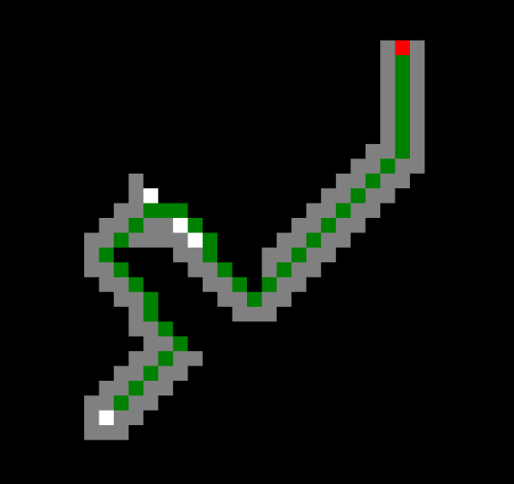
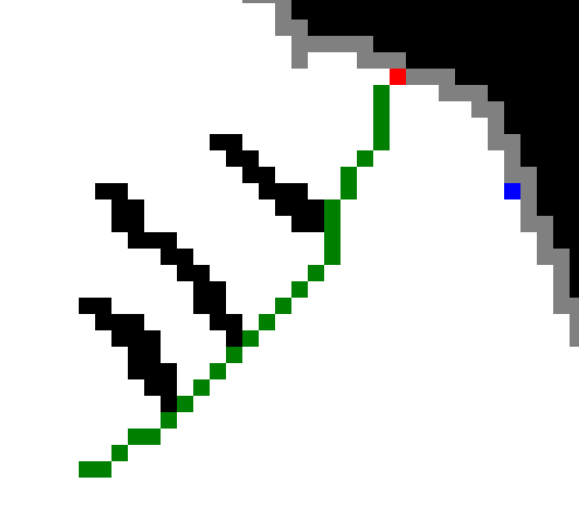

Week 3: Prioritized Search: Uniform Cost, Greedy Best-First, and A* Search
Chris Tralie
9/15/2021
Important New Terms: priority queue, cumulative cost, formal heuristic, admissibility, consistency
Today we discussed a set of search algorithms that use a priority queue instead of a queue; that is, every state on the queue is associated with a cost, and the lowest cost states come off of the queue first, regardless of when they got added. The choice of costs leads to different algorithms. The first one, uniform cost search, is still an uninformed technique, which means it doesn't know anything about the problem other than the transition graph. The final two, greedy best-first search and A* search, use something called a formal heuristic which incorporates some domain specific knowledge about how far a state is from the solution.
Uniform Cost Search
The first algorithm is a lot like breadth-first search, except we keep track explicitly of the cumulative distance of all states that lead to this state. We'll store on our priority queue this cost, the state, and the previous state. The pseudocode is below. Note that we can use the previous state to trace back the shortest path from the goal to the solution
UniformCost(start, goal):
state = start
visited = set([])
frontier = [] # This is a priority queue now
# Queue holds things with (cumulative cost, state, previous state)
frontier.add( (0, start, null) )
reachedGoal = false
while not reachedGoal and length(frontier) > 0:
# Take out element from front of line
(cumucost, state, prev) = frontier.pop()
if state is goal:
reachedGoal = true
else:
visited.add(state)
for n in state.neighbors():
cost = distance(state, n) # Distance of taking step from state to neighbor
cumucostn = cumucost + Cost # Moving to the neighbor costs as much as it
# took to move to state, plus the cost of moving from state to neighbor
if not n in frontier and not n in visited:
frontier.add( (cumucostn, n, state) )
else if n in frontier: // See if we just found a shorter path to n
if cumucostn < frontier.cost(n):
Update cost of n to be cumucostn on frontier
Overall, the pseudocode is fairly similar to that of breadth-first graph search, except it keeps track of a cost and uses a priority queue instead of a regular queue (other changes are bolded). Let's look at a picture of this algorithm in the middle of its run, as shown below. Suppose we just took state off of the queue, and state has 4 neighbors a, b, c, and d which are at distances d1, d2, d3, and d4 from state, respectively. Then, assuming that this is the first time we're seeing these neighbor nodes, we'll add them to the priority queue with the distance it took to get from start to state (cumucost), plus the distance to get from state to its neighbor. At this point, this is our best estimate of the distance of shortest path from start to one of these neighbors.
Then, suppose later before we get to one of the states (say a), we take a state p off of the queue which has a as a neighbor. If the distance x from the start to p plus the distance d1' from a to p happens to be smaller than the estimate cumucost+d1 that we had before, then we update the priority of a to be the smaller distance x+d1'. Because the priority queue only removes the smallest things first, we reach a node first at a priority equal to its shortest distance from the start. As a corollary, we reach the goal state with a cost equal to the shortest possible path to the goal state.
Those who are familiar with Dijkstra's algorithm for finding shortest paths in graphs may realize that uniform cost search is essentially the same thing, except we build the graph on the fly instead of starting with the full graph on the queue with all distances of infinity.
As a final note, uniform cost search is actually equivalent to breadth-first search if all of the neighbor transition costs are the same. This is because, as we recall, breadth first search visits states in increasing order of number of steps from the origin. If each step has the same cost, then the number of steps is equal to the cost times a constant, so the order is the same.
Let's look at an example of a pixel graph using 8 neighbors instead of 4. We'll make the horizontal and vertical neighbors have a distance of 1 and the diagonal neighbors have a distance of sqrt(2), as shown in the image below
Below is an animation showing how regular breadth-first graph search would do on this. Notice how the frontier moves out in a square (as opposed to moving out in a diamond for 4 neighbors)
Conversely, notice how with uniform cost search the front moves out in more of a circle, so the pixels on the frontier are closer to truly being the same distance from the start; hence the name "uniform cost"
Note, though, that if we switch back to 4 neighbors, uniform cost search reverts back to doing exactly what breadth-first graph search does with 4 neighbors: it moves out in a diamond. This is because all neighbors are at the same cost of 1.
Greedy Best-First Search
Let's look at another algorithm that uses a priority queue, but one that falls under the class of informed search algorithms; that is, we actually know something about the problem at hand beyond simply how the neighbors are connected. In particular, we'll define something called a formal heuristic, which is an estimate of the number of steps left to take to the solution from a particular state. At the very least, this heuristic should be admissible; it should never over-estimate the true cost left along the shortest path from the state to the distance. One example of an admissible heuristic for our pixel graphs is the straight line "Euclidean distance" from a state at location (x, y) to the goal at location (gx, gy)
\[ d((x, y), (g_x, g_y)) = \sqrt{ (x-g_x)^2 + (y-g_y)^2 } \]
We'll prove that this particular heuristic is admissible using a stronger condition in a moment. But for now, the pseudocode for a general admissible heuristic is shown below, with the modifications from uniform cost bolded
GreedyBestFirst(start, goal, heuristic):
state = start
visited = set([])
frontier = [] # This is a priority queue now
# Queue holds things with (heuristic, state)
frontier.add( (heuristic(start), start) )
reachedGoal = false
while not reachedGoal and length(frontier) > 0:
# Take out element from front of line
(heuristic_state, state) = frontier.pop()
if state is goal:
reachedGoal = true
else:
visited.add(state)
for n in state.neighbors():
if not n in frontier and not n in visited:
frontier.add( (heuristic(n), n) )
Let's look at how this does on a wide open grid with no obstacles, using 8 neighbors
Seems like it gets there pretty quickly! But let's switch it up a bit and place some obstacles in the way, as shown below (start shown in blue and goal shown in red, with obstacles in black)

In this case, greedy best first search has to expand relatively few nodes to find a solution still, but the shortest path it finds to the solution gets tricked into taking a longer route that takes 40 steps. By contrast, uniform cost search has to expand more nodes to find the solution, but it gets the shortest path with only 28 steps. So we can't rely on greedy best-first search to give us the shortest path to the solution, only some arbitrary path. Below are the solutions shown side by side
Greedy Best-First (40 Steps) |
Uniform Cost (28 Steps) |
|  |  |
You can try these yourself below
Greedy best-first search with obstacles
Uniform cost search with obstacles
A* Search
As it turns out, we can get the best of both worlds by doing something called A Star Search, which uses a priority that is the sum of the two costs in uniform cost and greedy best-first. In other words, A* uses an estimate of the total distance from start to finish as the sum of the cost taken so far and the sum of the heuristic h, and it prioritizes nodes which seem to be on the shortest such estimated paths. The picture below depicts this. Two quick notes:
- Our estimated cost of the optimal path from start to goal is cumucost + h(state)
- The cost to move to a neighbor is d, so once we move to the neighbor n, the cumulative cost becomes cumucost + d. The heuristic at the neighbor is h(n), so that neighbor's A* priority on the queue becomes cumucost + d + h(n).
AStar(start, goal, heuristic):
state = start
visited = set([])
frontier = [] # This is a priority queue now
# Queue holds things with (cumulative cost + heuristic(state), state, cumulative cost)
frontier.add( (heuristic(start), start, null) )
reachedGoal = false
while not reachedGoal and length(frontier) > 0:
# Take out element from front of line
(est, prev, cumucost) = frontier.pop() # est is priority: cumulative cost + heuristic
if state is goal:
reachedGoal = true
else:
visited.add(state)
for n in state.neighbors():
d = distance(state, n) # Distance of taking step from state to neighbor
costn = cumucost + d + heuristic(n) # Moving to the neighbor costs as much as it
# took to move to state, plus the cost of moving from state to neighbor,
# plus the heuristic
if not n in frontier and not n in visited:
frontier.add( (costn, n, cumucost + d) )
else if n in frontier: // See if we just found a shorter path to n
if costn < frontier.cost(n):
Update cost of n to be costn on frontier
Below is the same example as before with the obstacles. As you can see, it still searches in the direction of the solution much more quickly than uniform cost search, but it doesn't get messed up as much by the obstacles, and it correctly returns the shortest path. In fact, an admissible heuristic will guarantee that we reach the solution with a shortest path first
A* Search And Consistency
There's a stronger condition we can impose on our heuristic than admissibility, which is referred to as consistency. The consistency condition for a heuristic h is
\[ h(s) \leq h(n) + d(s, n) \]
where n is a neighbor of state s and d(s, n) is the distance between n and s. In other words, the heuristic should be roughly decreasing as we get closer to the goal.
We can show by induction that every consistent heuristic is admissible (though admissible heuristics are not necessarily consistent). Let h*(s) be the minimum cost of any path from the state s to a goal state, and let s, s2, s3, ..., sn be a sequence of states that realizes this cost, with sn being a goal state. Then, by the consistency condition, we can write
\[ h(s) \leq h(s_2) + d(s, s_2) \]
and then, plugging in the consistency condition for s3\[ h(s) \leq h(s_3) + d(s_2, s_3) + d(s, s_2) \]
and then, we continue by induction until we get
\[ h(s) \leq d(s, s_2) + d(s_2, s_3) + ... + d(s_{n-1}, s_n) = h^*(s) \]
Now we can prove that the straight line heuristic we used on grids is consistent simply by using the triangle inequality for both 4 neighbor and 8 neighbor grids. This also implies that it's admissible by above reasoning
One really nice thing about consistency is that we can guarantee that, like uniform cost search, the first time a state comes out of the queue, it has the lowest possible A* cost that any path to it every will. Furthermore, if the costs of all steps are the same (as they are in the 8-puzzle and rush hour), we can also guarantee that the state has the lowest cost the first time it's added to the frontier. This means we can cut out the check to see if a node is already on the frontier with a higher cost, which is great, because updating priorities on python priority queues is a pain. This will make your life much easier on homework 2. Below is the pseudocode for A* search assuming a consistent heuristic
AStarConsistent(start, goal, heuristic):
state = start
visited = set([])
frontier = [] # This is a priority queue now
# Queue holds things with (cumulative cost + heuristic(state), state, previous state, cumulative cost)
reachedGoal = false
while not reachedGoal and length(frontier) > 0:
# Take out element from front of line
(est, state, cumucost) = frontier.pop()
if state is goal:
reachedGoal = true
else:
for n in state.neighbors():
if not n in visited:
visited.add(n)
d = distance(state, n) # Distance of taking step from state to neighbor
costn = cumucost + d + heuristic(n) # Moving to the neighbor costs as much as it
# took to move to state, plus the cost of moving from state to neighbor,
# plus the heuristic
frontier.add( (costn, n, cumucost + d) )
Python Priority Queues
When you implement this in python, you can make use of the heapq library. Below is an example of how to use this. (You should try this out in jupyter until you're comfortable!)
Note that it's possible to push on tuples of information, so you can store more than just the priority on the queue. The priority will always be compared at the first element in the tuple. If there are ties, it will compare the second element, and so on.
In the case of A*, you'll want to push on a 4-tuple of (heuristic + cumucost, state, prev, cumucost). For ties, state should be comparable. This is why the __lt__ method is overloaded in the most recent starter code